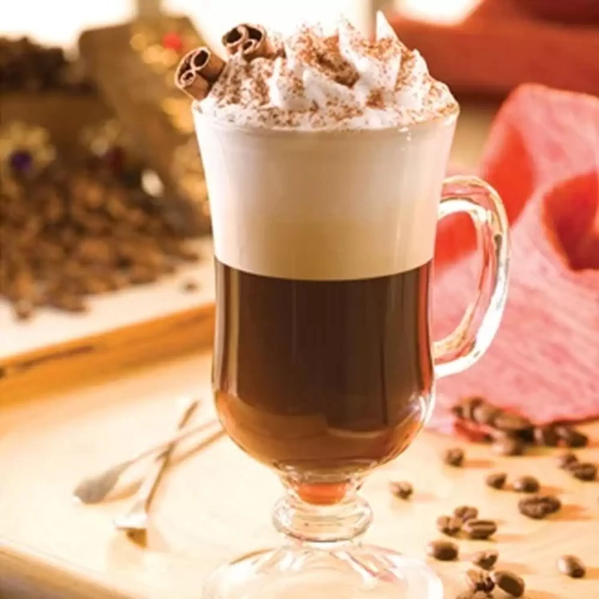
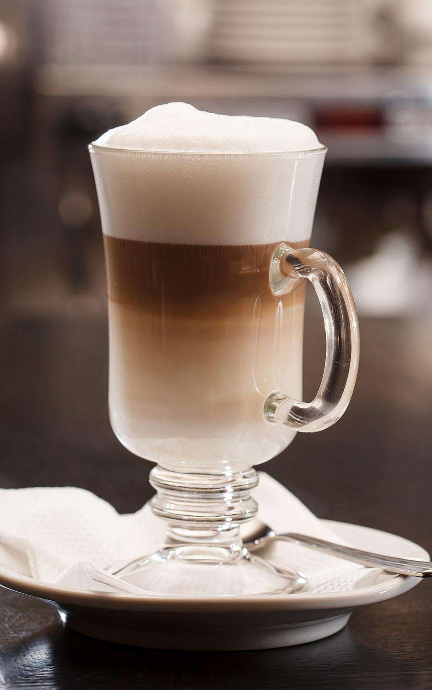
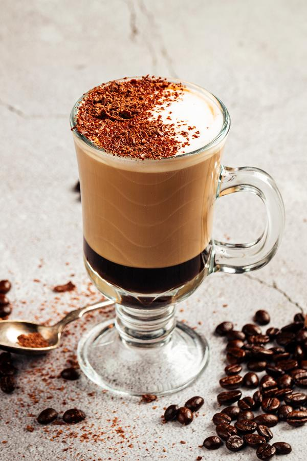

Receitas de Café
-
Cappuccino
Ingredientes (15 porções)
50 g de café solúvel
3 colheres (sopa) de chocolate em pó (não pode ser achocolatado)
1 colher (chá) de canela em pó
250 g de leite em pó (integral ou desnatado)
1 colher (chá) de bicarbonato de sódio
250 g de açúcar (ou equivalente em adoçante)
-
Macchiato
Ingredientes (01 Porção)
1 colher de sopa de leite condensado
1 copo de leite líquido integral
1 xícara de café espresso
-
Mocaccino
Ingredientes (02 Porções)
2 colheres de leite em pó
2 quadradinhos de chocolate meio amargo
2 copos de agua
2 colheres de chocolate em pó
1 colher de café torrado e moido
Sobre o Café
O café é uma bebida produzida a partir dos grãos torrados do fruto do cafeeiro. É servido tradicionalmente quente, mas também pode ser consumido gelado. O café é um estimulante, por possuir cafeína — geralmente 80 a 140 mg para cada 207 ml dependendo do método de preparação.